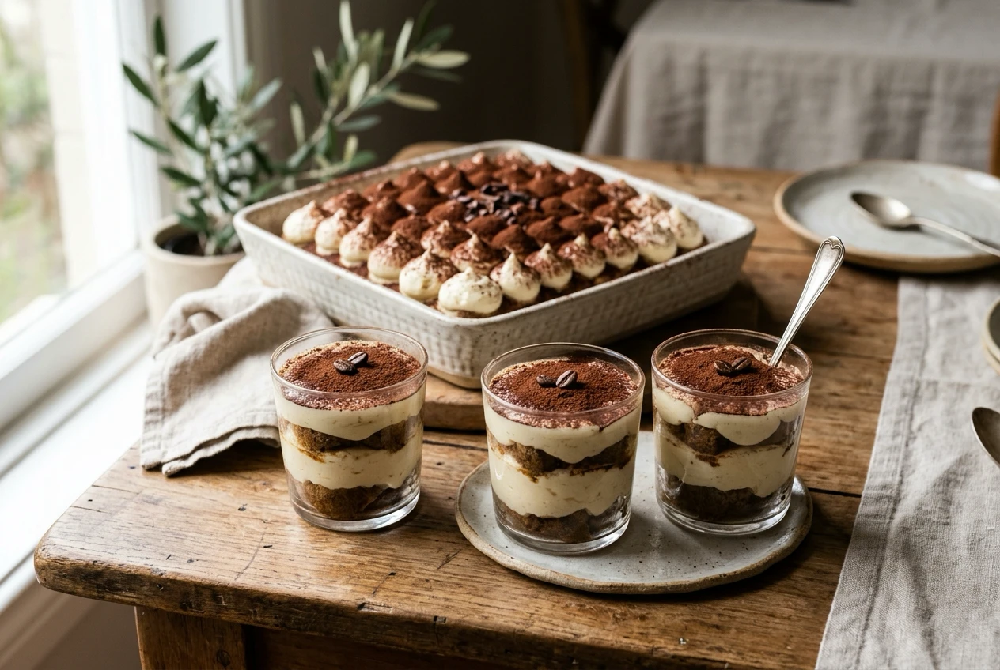
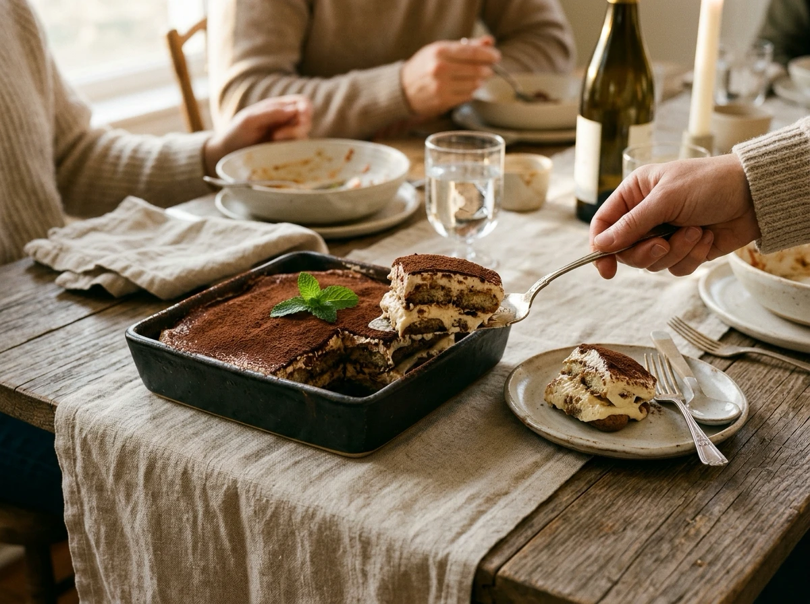
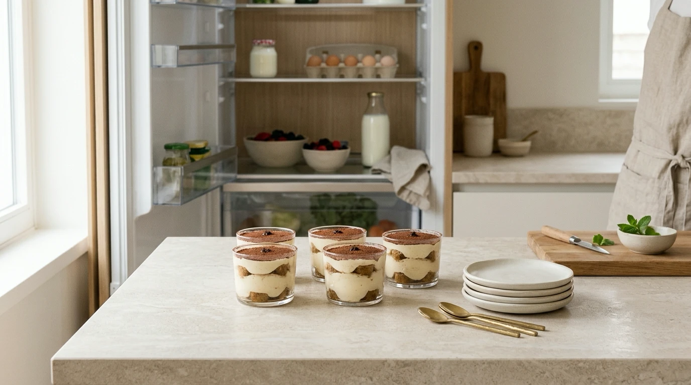

VERYGOOD JOURNAL · PARTY & GATHERING GUIDE
Editorial Guide · 4 min read · Hosting, Fridge Planning & Serving Formats
You have chosen the dessert. Now you need to decide how people will actually enjoy it at your event.
Choose individual cups if you want ready-portioned servings where guests can easily help themselves; consider a sharing tray if you prefer serving tableside and adjusting portion sizes as you go. Neither format is automatically better for every occasion.
Before picking whichever presentation photo catches your eye first, consider your fridge space, serving setup, and how you want the dessert moment to flow.

Individual glass cups offer ready-to-enjoy portions, while a ceramic sharing tray creates an interactive tableside dessert moment.
Individual dessert cups let you prepare an exact, self-contained serving for each guest. When you are already coordinating drinks, dinner courses, and table conversation, taking away the need to slice and portion a shared dessert is a genuine hosting relief.
They are also an ideal match for buffet-style dessert tables where guests drift over and take one serving at their leisure. You will still need appropriate dessert spoons and a plan for keeping the cups chilled—small containers are never exempt from continuous refrigeration.
Before ordering, verify the cup volume. A headcount of 12 cups does not tell you whether each serving is an espresso-sized bite or a substantial plated dessert.
SERVING FORMAT SNAPSHOT
Matching the format to your gathering flow
INDIVIDUAL CUPS
Effortless Self-Serve
Pre-portioned, no serving utensils required, easy to tuck into small gaps on fridge shelves.
SHARING TRAY
Communal Tableside Dining
Flexible portion sizes, generous visual presence, requires one contiguous flat fridge shelf.
A large sharing tray is a natural centrepiece for seated family dinners where serving dessert becomes part of the shared ritual. It gives you the flexibility to offer generous scoops to dessert enthusiasts and smaller portions to those who only want a light sweet note.
Always confirm how the maker defines a “serving.” A suggested count of 10–12 servings is only helpful if it aligns with the rest of your dinner menu and your guests’ appetites. Request exact tray dimensions as well, so you can measure available fridge clearance in advance.
If your gathering is hosted at a venue, park, or friend’s house, remember to bring an elegant cake server and extra dessert plates alongside the tray.

A sharing tray allows custom portioning at the table, creating an engaging, communal dessert ritual.
Because classic tiramisu is built with fresh dairy mascarpone and eggs, you must plan for uninterrupted refrigeration—from transport through to the moment of serving.
FOOD SAFETY & REFRIGERATION STANDARD
Maintain 5°C or colder for dairy and egg desserts
Food Standards Australia New Zealand (FSANZ) recommends storing potentially hazardous foods at 5°C or colder, specifically citing fresh cream and egg-containing foods as examples.[5] Put out only what you are ready to serve immediately, keeping the remaining portions chilled until guests are ready. Always follow the maker’s storage directions and use-by date rather than general online advice.
Fridge logistics often decide the winner: cups can be divided across door compartments or squeezed into available shelf corners, whereas a tray demands one wide, completely flat shelf. Measure your fridge shelf height and depth before confirming your order.

Keeping fresh dairy and egg desserts chilled below 5°C right until serving ensures pristine texture and food safety.[5]
HOSTING PRE-ORDER CHECKLIST
Before finalizing your order, ask your supplier these four practical questions:
01 · Dimensions & Serving Basis
What are the physical dimensions, and what serving weight/size is the recommendation based on?
02 · Alcohol & Recipe Components
Does this version contain traditional Marsala, rum, or liqueur, and what ingredients are used?
03 · Allergen & Cross-Contact Details
What allergen declarations are available for dairy, eggs, gluten/wheat, and nuts?[6]
04 · Transport, Storage & Shelf Life
How should the dessert be transported and stored, and what date information applies?
FSANZ requires allergen information to be displayed with unpackaged foods or made readily available upon request.[6] Never assume every tiramisu follows the same recipe or suits the same dietary needs.
Use this quick decision framework to match your gathering style to the right tiramisu format:
YOUR EVENT PLAN
RECOMMENDED FORMAT
Guests each take a ready-portioned dessert
Individual cups
You want to adjust portions while serving at the table
Sharing tray
Fridge space is awkward or shelf height is limited
Measure dimensions (cups allow split storage)
A guest has an allergy or dietary requirement
Verify suitability with supplier first[6]
Start with how the dessert will actually be enjoyed, then confirm the practical details of fridge space and transport. That approach makes your final choice far more reliable than deciding on visual styling alone.
EXPLORE VERYGOOD · SYDNEY
Planning a gathering or special celebration?
Explore verygood’s current dessert collection in Sydney. Confirm available sizes, recipe ingredients, and storage guidance before placing your order.
Sources & References
[5] Food Standards Australia New Zealand (FSANZ) — Keeping food at the right temperature (https://www.foodstandards.gov.au/business/food-safety/keeping-food-at-the-right-temperature)
[6] Food Standards Australia New Zealand (FSANZ) — Allergen labelling for consumers (https://www.foodstandards.gov.au/consumer/labelling/allergen-labelling)